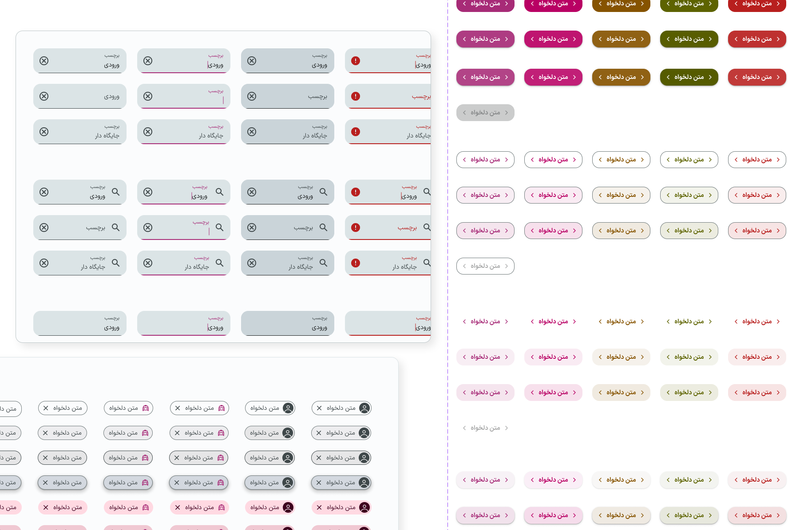

01 — Project snapshot
From a fragmented utility to a coherent self-service product
Rightel, one of Iran’s three major mobile operators, serves millions of prepaid and postpaid users. My Rightel is the primary self-service channel for checking balance, buying packages, renewing subscriptions, and making payments—flows that directly support revenue and retention.
This was not a visual refresh. The product had grown into a collection of feature-specific journeys with inconsistent patterns and disconnected information. The redesign focused on creating a shared product logic built around clarity, speed, and trust.
My contribution
- Led the redesign from discovery through final delivery
- Audited and redesigned four revenue-critical customer journeys
- Built the foundational design system, reusable components, variants, and Figma Variables
- Produced high-fidelity interactive prototypes
- Balanced user needs, business goals, and technical constraints with cross-functional partners
- Conducted design reviews and implementation QA
02 — Evidence from the existing experience
Understanding where critical journeys broke down
The discovery phase combined a hands-on product audit, journey mapping, early feedback, stakeholder workshops, and user interviews. The purpose was to separate isolated interface issues from systemic product problems before moving into solutions.
Experience audit
I completed the existing journeys as a customer would, mapping the steps, repeated patterns, inconsistent states, and moments where essential information became difficult to find or interpret.
Recurring user problems
- Unclear balance and usage visibility: important information was distributed across multiple screens, preventing a quick understanding of account status.
- Overwhelming package selection: options lacked context and comparison support, increasing decision effort during time-sensitive purchases.
- Unpredictable payments: payment methods and errors lacked explanation, especially when account credit was involved.
- Inconsistent product logic: similar information and actions behaved differently across journeys, increasing learning effort and reducing trust.
Stakeholder and user input
Workshops aligned product, engineering, and business stakeholders around the highest-risk problems. User interviews validated the urgency behind them: losing data access at an inconvenient moment, uncertainty during package selection, and anxiety when payment behavior could not be explained.
Data access and business constraints
For security and data-governance reasons, the design team did not have direct access to tools such as Microsoft Clarity or Google Analytics. Behavioral and commercial data were reviewed by the business team, who shared relevant findings and identified areas requiring improvement.
These findings informed our priorities, but they did not automatically determine the design solution. We evaluated them alongside qualitative feedback, usability considerations, technical feasibility, and the broader product experience.
In some cases, we challenged or refined the requested changes based on design evidence. In others, business requirements had to take precedence. My role was to translate these inputs into solutions that supported business goals while minimizing unnecessary friction for customers.
Product analytics were available through the business team rather than directly to designers. The case study therefore distinguishes shared behavioral findings from the qualitative evidence and design evaluation conducted by the product-design team.
Competitive evidence
Competitor analysis helped distinguish familiar telecom patterns from opportunities specific to My Rightel. The goal was not to copy another operator, but to understand which conventions already helped customers recognize status, compare packages, and reach high-frequency actions.
My Irancell
Package purchase begins directly from bottom navigation and opens a focused page with Daily, Weekly, Monthly, and All filters. Personalized suggestions and “Best Seller” indicators reduce comparison effort, while progress visuals communicate balance urgency.
What we carried forwardMake package access visible and support faster comparison with recognizable filters and value cues.
Hamrah Man
Contextual package access from the home screen, clear prepaid/postpaid separation, transparent payment options, and detailed usage reports formed useful benchmarks.
What we carried forwardConnect account context to relevant actions and make payment and usage information easier to interpret.
User interview and usability-testing guide
We used a structured question bank during user interviews and usability-testing sessions. It combined open-ended prompts with rating questions, while allowing the interviewer to follow up on the participant’s specific experience rather than treating the guide as a fixed survey.
- How often do you use My Rightel?
- What is your primary goal when using a product like My Rightel?
- Which features do you use most frequently?
- چند بار در ماه از رایتل من استفاده میکنید؟
- هدف اصلی شما هنگام استفاده از محصولی مانند برنامه رایتل من چیست؟
- بیشتر از چه ویژگیهایی در برنامه استفاده میکنید؟
- Was it easy to find what you were looking for in the bottom navigation?
- How easy is it to use My Rightel overall?
- How useful were the menu items in guiding you toward your goal?
- آیا یافتن آنچه که به دنبال آن هستید در منو پیمایش پایین صفحه آسان بود؟
- به طور کلی، استفاده از رایتل من چقدر آسان است؟
- موارد ارائه شده در منو تا چه میزان در هدایت شما به هدفتان کاربردی بودند؟
- What is the most frustrating thing about My Rightel?
- What is the hardest part of using the app?
- When did you find the app particularly satisfying?
- چه چیزی در نرمافزار رایتل من برای شما ناامیدکنندهتر است؟
- سختترین بخش استفاده از برنامه ما چیست؟
- زمانی که برنامه ما را بسیار رضایتبخش یافتید، چه زمانی بود؟
- If you could improve one thing about My Rightel, what would it be?
- What would you like My Rightel to do that it does not currently do?
- Why did you choose us instead of competitors?
- اگر بتوانید یک چیز را در مورد برنامه رایتل من بهبود ببخشید، آن چیست؟
- کاری که دوست دارید برنامه رایتل من بتواند انجام دهد چیست که قبلاً انجام نداده است؟
- چرا ما را به جای رقبا انتخاب کردید؟
The question set was reviewed to remove duplicated prompts, replace design terminology with language customers could answer naturally, and sequence questions from current behavior to friction and then improvement. For example, participants were first asked to identify the hardest part of an experience before being asked how they would improve it.
Research synthesis
Across the product audit, stakeholder input, user conversations, business-team findings, and competitor review, three recurring themes shaped the redesign priorities.
Status lacked a single point of truth
Customers had to combine information from several screens to understand balance, package usage, and what required attention.
Design prioritySurface critical status first and connect it directly to the next relevant action.
Package choice required too much interpretation
Packages were presented without enough context or comparison support, making time-sensitive decisions harder.
Design priorityImprove scanning, filtering, comparison, and the relationship between current usage and package choice.
Payment behavior was difficult to explain
Available methods, credit limitations, and error states could change without giving customers a clear reason.
Design priorityMake transaction status and system feedback predictable without adding disruptive steps to checkout.
The redesign’s measurement targets—including payment completion, package purchase conversion, time to decision, balance visibility, and error recovery—are documented once in the Validation and Outcomes section.
03 — Design principles
A shared logic for every journey
The research was translated into four principles that guided both product decisions and the design system.
Surface the information customers need to understand their current situation immediately.
Place the next relevant action beside the information that creates the need for it.
Structure choices for scanning and comparison instead of presenting undifferentiated lists.
Use consistent states and feedback so customers understand what happened and what to do next.
System Evolution
The core challenge was not missing data, but missing contextual clarity. Users navigated multiple sections to answer a simple question: “Am I running out of data?”
1. Dashboard Experience
Problem: balance and usage existed, but users had to interpret multiple views with no single point of truth.
Solution: centralize critical status, prioritize remaining balance and active package, add progress indicators, and connect status to relevant actions.
Expected impact: easier at-a-glance understanding, fewer unnecessary navigation steps, and a clearer connection between status and action.


2. Package Selection
Problem: package selection was disconnected from current usage, and renewal and first-time purchase flows were treated alike.
Solution: reorganize packages, improve scanning and comparison, reduce visual noise, and continue directly from the dashboard context.
Expected impact: lower decision effort, faster package comparison, and a clearer connection between usage and purchase.


3. Balance Experience
Problem: raw numbers showed how much was consumed without explaining what it meant.
Solution: structure total, used, and remaining values; prioritize usage signals; and introduce a Package Usage Report. The experience shifted from showing numbers to explaining consumption.
Expected impact: lower cognitive load, easier comprehension, and greater confidence before purchasing.


4. Payment Experience
Problem: details were difficult to verify, options lacked transparency, and users at their credit limit could not continue.
Solution: create a dedicated credit-increase flow, allow in-app credit management, reduce support dependency, and connect it to billing.
Expected impact: clearer payment decisions, fewer avoidable errors, and greater confidence during checkout.


Design Trade-offs & Constraints
One of the key payment methods in the app is paying directly from user credit. However, surfacing credit-related information in the payment step introduced both technical constraints and UX trade-offs.
Technical Constraint
Displaying the user’s remaining credit on the payment screen required an additional backend query.
- This query would increase load on the payment flow.
- It risked slowing down a highly sensitive, conversion-critical step.
- Due to backend limitations, showing real-time credit balance was not feasible at the time.
As a result, the remaining credit was intentionally not displayed on the payment screen in the shipped version.
Constraint-driven release
To avoid confusion and failed payments:
- If the user’s credit was insufficient for the selected package, the option to pay via credit was automatically hidden.
- Only bank gateway payment options were shown in those cases.
This ensured technical stability and prevented unsuccessful payment attempts.

Resulting UX Issue
While technically safe, this approach introduced a usability problem:
- Payment method availability was not transparent, making it hard for users to understand why certain options appeared or disappeared.
- This increased cognitive load at a critical moment in the payment flow.
Proposed improvement (Designed, not shipped)
To make the payment decision clearer, a new design was proposed:
- Explicitly displaying the user’s remaining credit.
- Showing whether the credit is sufficient for the selected package.
- Providing a clear visual explanation for available and unavailable payment methods.
- An “Increase Credit” action to allow users to resolve insufficient balance directly.

Why This Version Was Still Problematic
- The “Increase Credit” action pulled users out of the purchase flow.
- For postpaid users, they first needed to settle their bill via a bank gateway, wait for settlement to be processed, then repeat the payment flow again.
- This multi-step detour significantly increased drop-off risk, payment abandonment, and user frustration.
Final Decision
- Remove the “Increase Credit” action from the payment screen.
- Keep the payment flow focused on a single, uninterrupted transaction.
- Avoid sending users into parallel financial flows during checkout.
This decision prioritized completion rate and flow continuity over offering more options.

Why This Matters
This iteration highlights how payment design is not just about visibility, but about:
- Minimizing flow interruptions.
- Respecting backend realities.
- Reducing cognitive and operational friction at conversion points.
It also demonstrates deliberate trade-offs between ideal UX and practical product constraints.
06 — Design system evolution
Creating a scalable foundation for the redesigned product
The product redesign and the design system were developed together. Three months were dedicated to establishing foundations and reusable patterns before applying them across the mobile and responsive web experiences.
A fragmented system
The previous experience relied on repeated local decisions and inconsistent patterns across journeys.
Shared foundations and behavior
The new system introduced reusable components, variants, and Figma Variables to align visual language, interaction states, and responsive behavior.
One system across core flows
Dashboard, package, balance, and payment patterns were designed as connected parts of the same product rather than isolated screens.

What the system covered
- Color foundations and semantic application
- Typography and spacing rules
- Reusable components and variants
- Interactive states, including focus, pressed, disabled, and error
- Figma Variables for consistent system updates
- Patterns shared across mobile and responsive web
07 — Validation and outcomes
Testing assumptions before release
Pre-launch validation
Interactive prototypes were tested with target users to evaluate:
- Clarity of information hierarchy
- Ease of completing critical tasks
- Understanding of usage and payment status
- Overall confidence in decision-making
The findings informed interaction refinements before development. Participant count, task-success results, and the changes made between test rounds still need to be documented.
Outcome status
The website currently does not include verified post-launch results. The following were defined as measurement targets rather than demonstrated outcomes:
- Package purchase conversion rate
- Payment completion rate
- Drop-off rate across critical flows
- Frequency of balance and usage checks
- Engagement with Package Usage Report
Because these journeys affect revenue and customer trust, the impact of interface changes should be validated through controlled experiments and behavioral analytics before being presented as measured results.
Prototype
08 — Reflection
What this project changed in my approach
The project reinforced that simplifying a telecom product is not primarily about removing information. It is about making status understandable, connecting it to the next relevant action, and ensuring that system behavior remains predictable across journeys.
The payment work also showed that a visually clearer option is not always the better product decision. When an action creates a long operational detour, protecting flow continuity can be more valuable than exposing additional choice.
With stronger access to post-launch analytics, the next step would be to validate the redesigned journeys against the defined success metrics and prioritize iterations using both behavioral data and qualitative feedback.